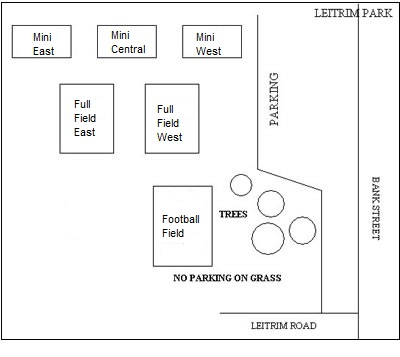

Field Assignments and Locations
Fields cannot be assigned before the registration of all pools close. The number of teams that join each year, and the Dual Shoot-out format used by the tournament determines which fields can accommodate each pool. Field Assignments will be announced when we issue the Preliminary Schedules and will be published on your schedule.
Most of the tournament is played within a small area of the city. Montreal Road to the North; the International Airport to the South; St. Laurent Boulevard to the East and the Rideau River to the West. It takes approximately 20 and 25 minutes commuting time to go from one end to the other.
Hudson Travel Group is the Icebreaker's Travel Accommodations Sponsor and has "block-booked" many reasonably priced rooms in hotels that are close to, the fields. Please contact the Hudson Travel Group to take advantage of their block-booking.
Locations
Note: Do not park on the grass, you will be ticketed!
Ottawa Business Park
Parking for the central and east fields are at the Thurston end of the park. Parking for the west fields are at the Conroy end of the park.
Leitrim Park
The parking lots are behind and beside the Fred Barrett arena. The fields are behind the arena.

St. Patrick's High School, Ridgemont High School
There is parking behind both schools. You enter the St. Patrick's lot from Heron road and you enter the Ridgemont lot from Alta Vista drive.
Orlando Park
Parking is available at St. Patrick's Intermediate school at 1485 Heron Rd. The three fields are west of the parking lot. Additional parking is available at St. Pat's High School. Do not park on the streets west of the park as the city will ticket you.
Ottawa Technical Learning Center
McCarthy Park
The McCarthy Park fields are beside the Hunt Club-Riverside community centre.
Hillcrest High School and Ecole Sécondaire Franco Cité
Greenboro Park and Bruff Park (sometimes called "Reston Park)
There are two fields behind the Greenboro community centre and the Bruff field is across from the community centre behind/beside the baseball diamond.
Winterwood and Pike Parks
The fields are behind Roberta Bondar Public School.
Brewer Park
Access the parking from Bronson avenue.